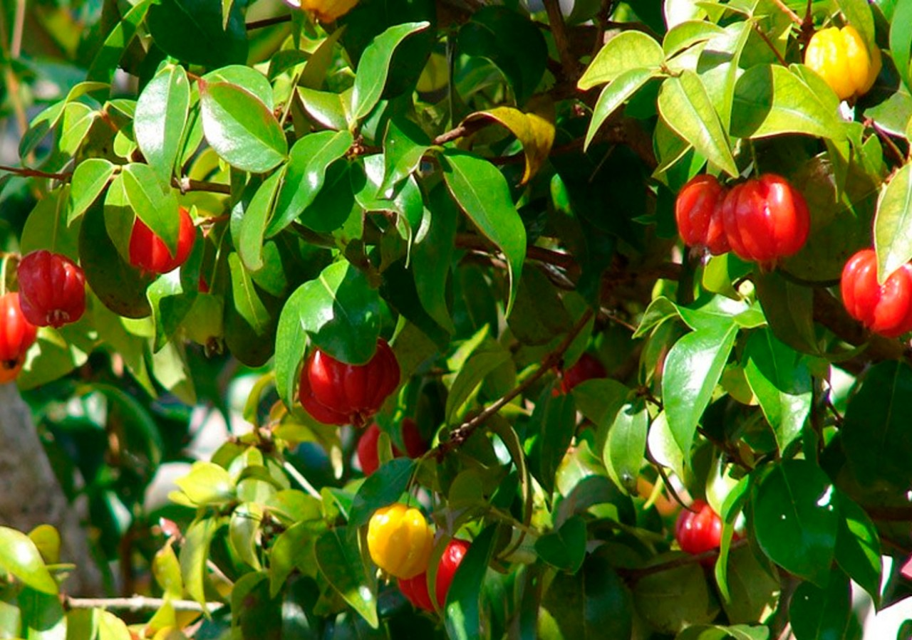
Pitangueira
Eugenia unifloraColetar: folhas e frutos.
I · Definição
Arbusto é uma planta lenhosa, perene e de porte médio — geralmente entre 0,5 e 5 metros de altura — que se ramifica logo a partir do solo, sem formar um único tronco principal como as árvores.
Diferente das ervas, possui caules rígidos cobertos de tecido lenhoso. Diferente das árvores, mantém múltiplas hastes, copa baixa e estrutura mais compacta. Essa morfologia faz do arbusto a planta predileta da paisagem cultivada.
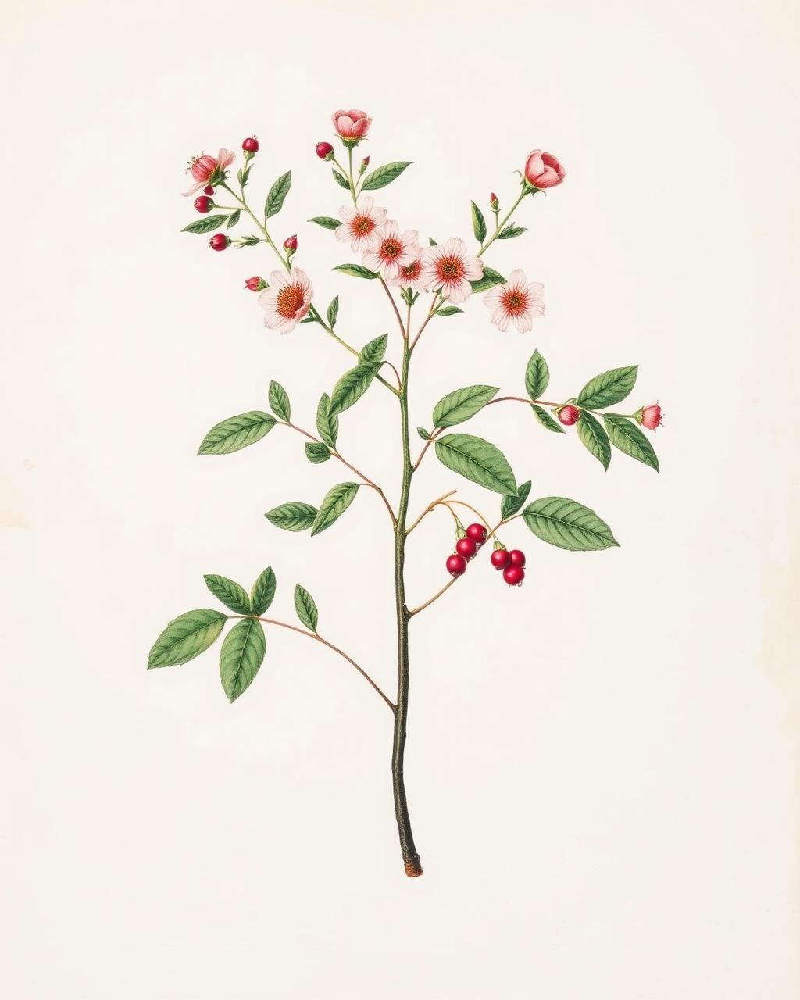
II · Caracteres distintivos
O arbusto normalmente não possui um único tronco dominante. Em vez disso, vários caules lenhosos nascem próximos ao solo e se dividem logo desde a base, formando uma copa densa e arredondada.
As árvores, ao contrário, desenvolvem um tronco principal bem definido, que sustenta os galhos mais acima. Já as ervas possuem caules finos e macios, geralmente verdes, sem formação de madeira verdadeira.
O arbusto ocupa uma posição intermediária entre árvores e ervas. Em geral mede entre 0,5 e 5 metros de altura, embora algumas espécies possam ultrapassar esse limite.
As ervas costumam ser pequenas e delicadas, enquanto as árvores alcançam grande altura e formam copas elevadas. O arbusto permanece mais baixo, compacto e próximo ao solo, característica que favorece cercas-vivas, moitas e vegetação densa.
Os arbustos possuem tecidos lenhosos permanentes — isto é, produzem madeira. Seus ramos endurecem com o tempo e continuam vivos durante muitos anos, rebrotando a cada estação.
Isso os diferencia das ervas, cujo caule é herbáceo, flexível e frequentemente morre após o florescimento. Embora compartilhem a presença de madeira com as árvores, os arbustos mantêm estrutura menor e mais ramificada.
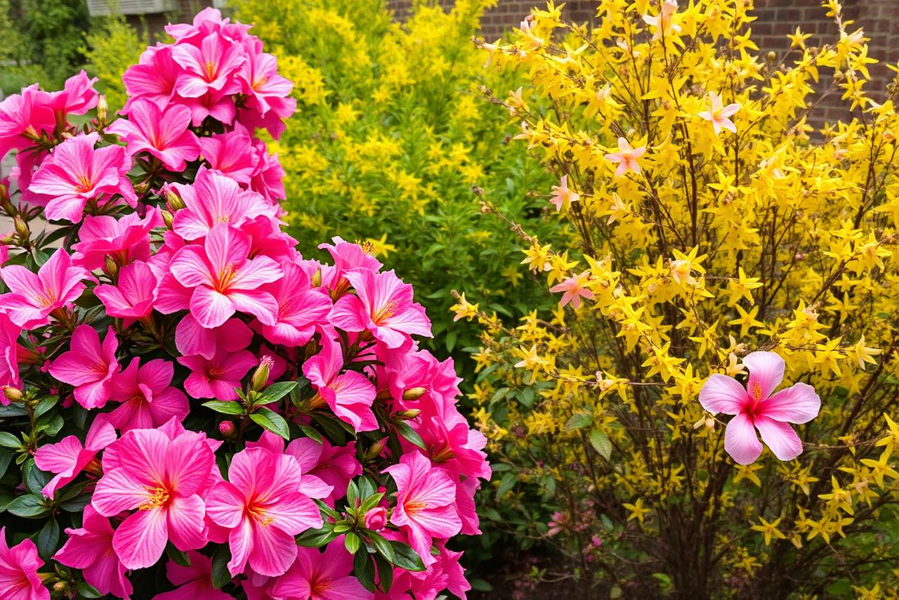
A parreira (videira) é, por natureza, uma planta trepadeira lenhosa — uma liana. Quando, porém, é cultivada sem suporte ou conduzida em formação livre, seus ramos se enrijecem e se sustentam por si mesmos, ramificando-se desde a base.
Nessa condição assume porte e comportamento típicos de arbusto: caule lenhoso, múltiplas hastes, altura média e perenidade. Por isso muitos botânicos a classificam como arbusto sarmentoso ou arbusto escandente.
III · Frutos comestíveis
A Aveleira (Corylus avellana) é o exemplo clássico de arbusto produtor de castanhas comestíveis: as cobiçadas avelãs.
Atinge de 3 a 5 m de altura, ramifica-se desde o solo e produz amentilhos amarelos no fim do inverno, antes mesmo do surgimento das folhas. Seus frutos amadurecem no fim do verão, envoltos por uma cápsula verde recortada.
Outros arbustos também oferecem sementes oleaginosas comestíveis, como a aveleira-americana (Corylus americana) e certas variedades anãs do castanheiro.
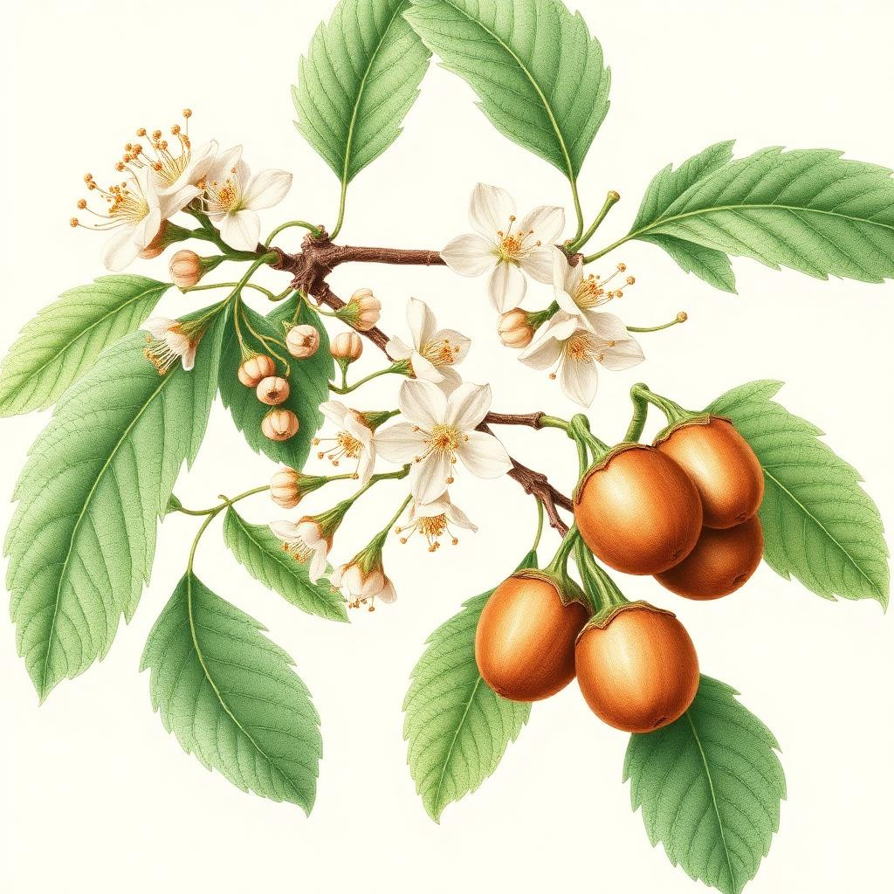
IV · Galeria de espécies
Cultivados e silvestres — uma pequena coleção do que se vê no Brasil.
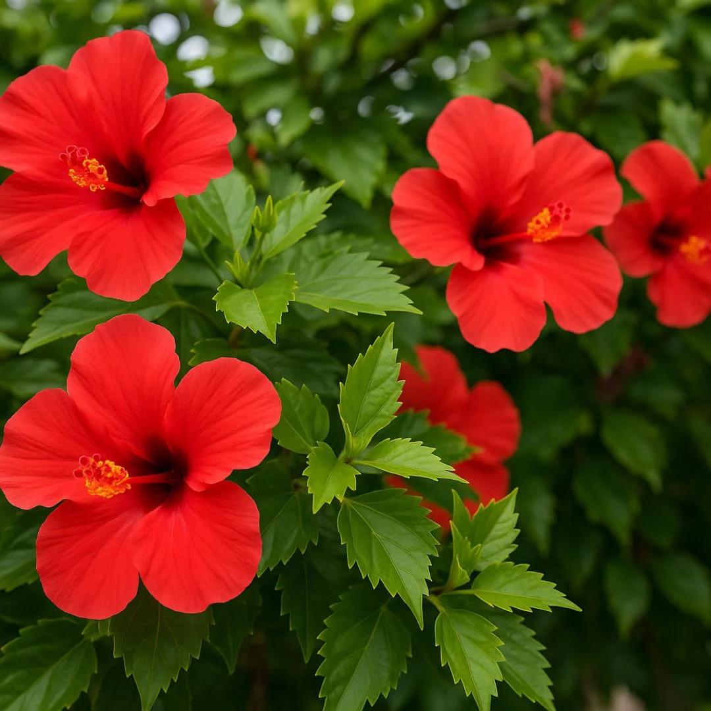
Flores grandes, vermelhas, rosas ou amarelas. Muito comum em quintais e cercas vivas. Floresce praticamente o ano inteiro em climas quentes.
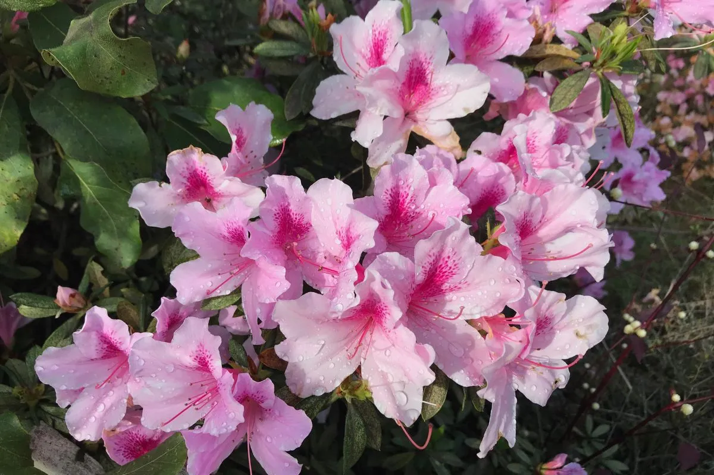
Arbusto compacto coberto por flores rosadas, brancas ou vermelhas no fim do inverno e início da primavera. Predileta dos jardins urbanos.
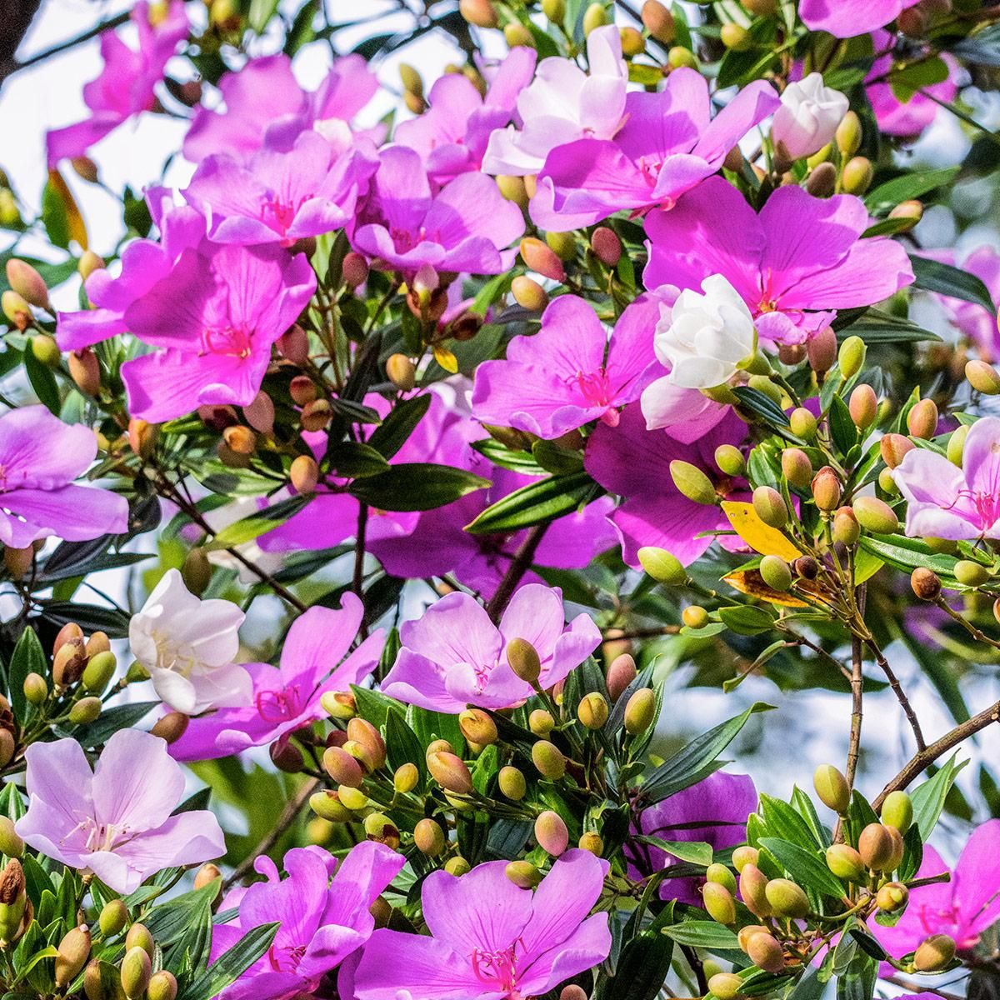
Nativa da Mata Atlântica, exibe flores que mudam do branco ao rosa e ao roxo na mesma planta. Espetacular na primavera.
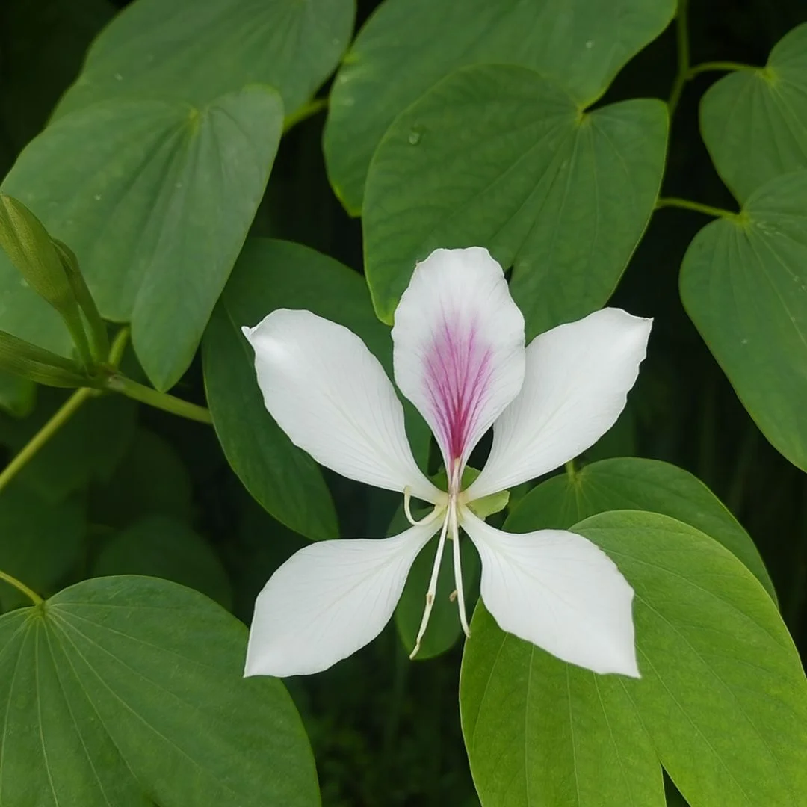
Encontrada no cerrado e em campos abertos, com flores grandes brancas ou rosadas e folhas em forma de casco bovino.
V · Calendário floral
É no despertar do ano, quando os dias se alongam e a temperatura sobe, que os arbustos abrem o grande espetáculo de cores.
A primavera reúne as condições ideais: solo úmido das chuvas tardias do inverno, sol crescente e polinizadores ativos. Não por acaso, é nessa estação que as azaleias, as rosas, os jasmins e tantos outros arbustos coroam os jardins.
A Forsítia (Forsythia × intermedia) é o exemplo perfeito: ainda no fim do inverno, seus galhos nus se cobrem inteiramente de flores amarelo-ouro — só depois é que as folhas verdes despontam. A Magnólia-estrela e o Cercis (árvore-de-judas) seguem o mesmo padrão.
| Estação | Característica | Exemplos |
|---|---|---|
| Primavera | pico de floração | azaleia, forsítia, lilás |
| Verão | flores duradouras | hibisco, hortênsia, rosa |
| Outono | poucas espécies | camélia, hamamélis |
| Inverno | floração antecipada | forsítia, jasmim-amarelo |
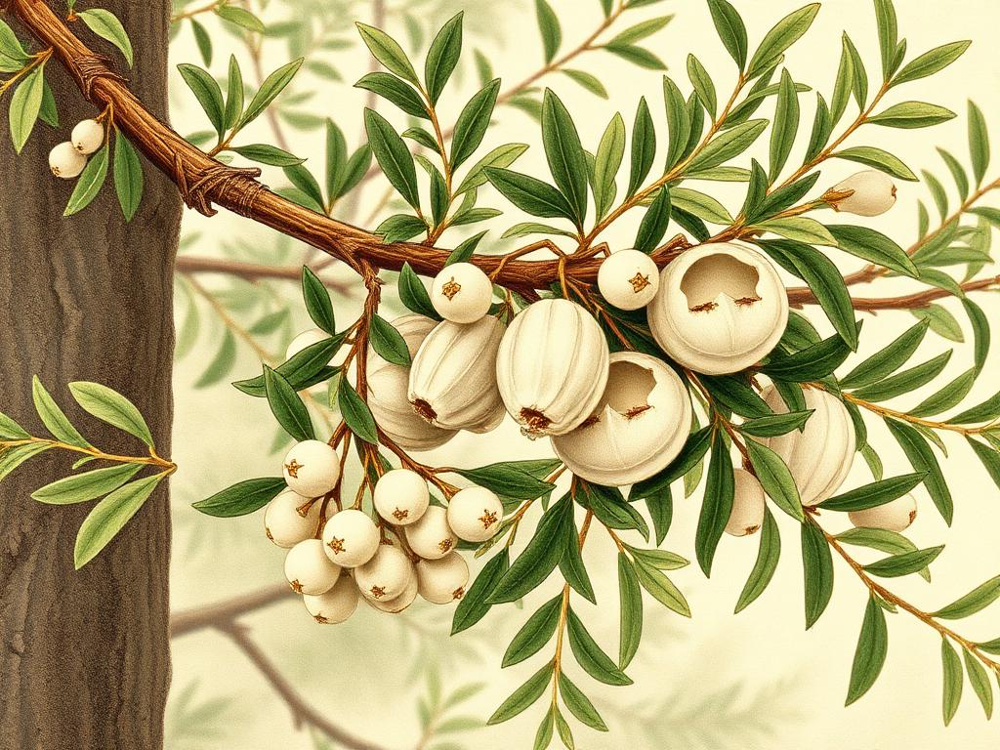
VI · O arbusto que pende do alto
O Visco (Viscum album) é um pequeno arbusto parasita que cresce sobre os galhos mais altos de árvores como macieiras, choupos, carvalhos e pinheiros.
Com folhas verdes coriáceas e bagas brancas translúcidas, é célebre por seu uso na decoração de interiores no Natal — a tradição de pendurar um ramo de visco sob o lintel da porta vem de costumes europeus muito antigos.
Não tem raízes no solo: fixa-se aos ramos hospedeiros por meio de haustórios, retirando deles seiva e minerais. Suas sementes, transportadas por aves, grudam-se aos galhos graças a uma polpa muito viscosa — daí o nome.
VII · Arbustos & aves
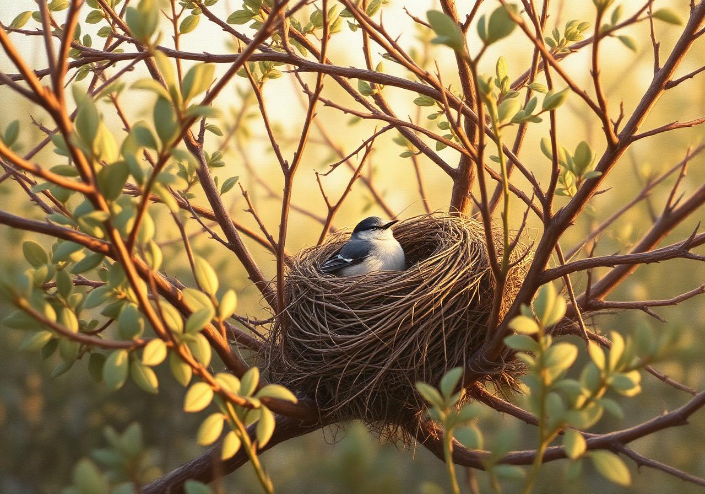
As aves se deliciam com bagas e sementes de amoreira-silvestre, sabugueiro, pitanga, aroeira, azevinho e do próprio visco. Esses arbustos costumam ter frutos pequenos, vermelhos ou escuros, ricos em açúcares.
O Hibisco (Hibiscus rosa-sinensis), com seu cálice profundo e abundante néctar, é um dos campeões na atração de beija-flores. A Camélia, o Lantana e a Grevílea-anã também figuram entre os preferidos das aves nectarívoras.
As aves preferem arbustos densos, espinhosos e com folhagem cerrada, que protegem os filhotes contra predadores. Espécies favoritas: roseira-brava, azevinho, espinheiro-alvar, buxinho e pitangueira. Os galhos baixos e entrelaçados oferecem suporte firme para o ninho.
VIII · Herbário
Como criar um herbário?

Coletar: folhas e frutos.
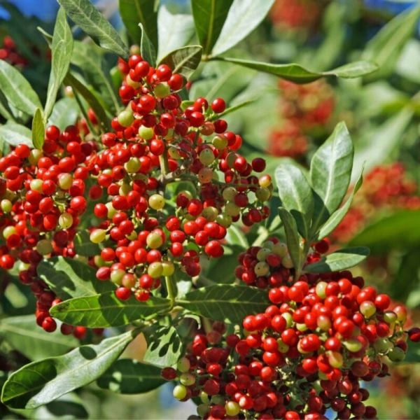
Coletar: folhas e bagas vermelhas.
Coletar: flores e folhas.
Coletar: folhas bilobadas e vagens.
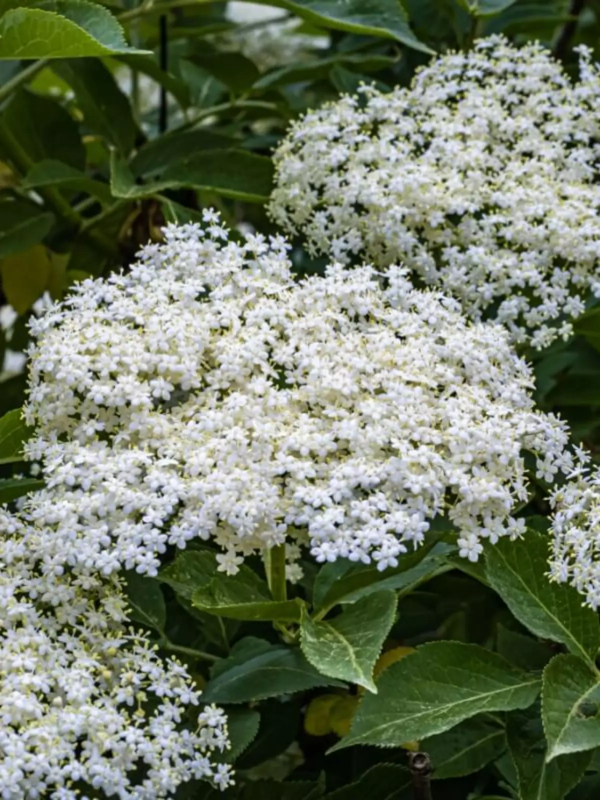
Coletar: flores brancas e frutos.
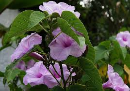
Coletar: folhas e flores brancas.
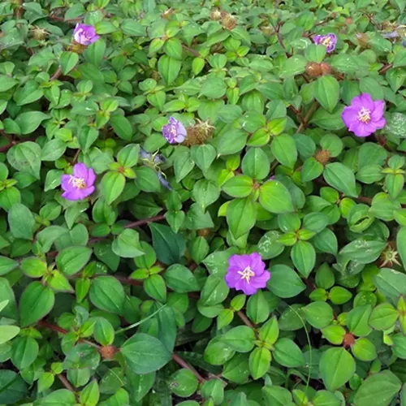
Coletar: botões e flores roxas.
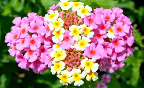
Coletar: flores em umbelas.
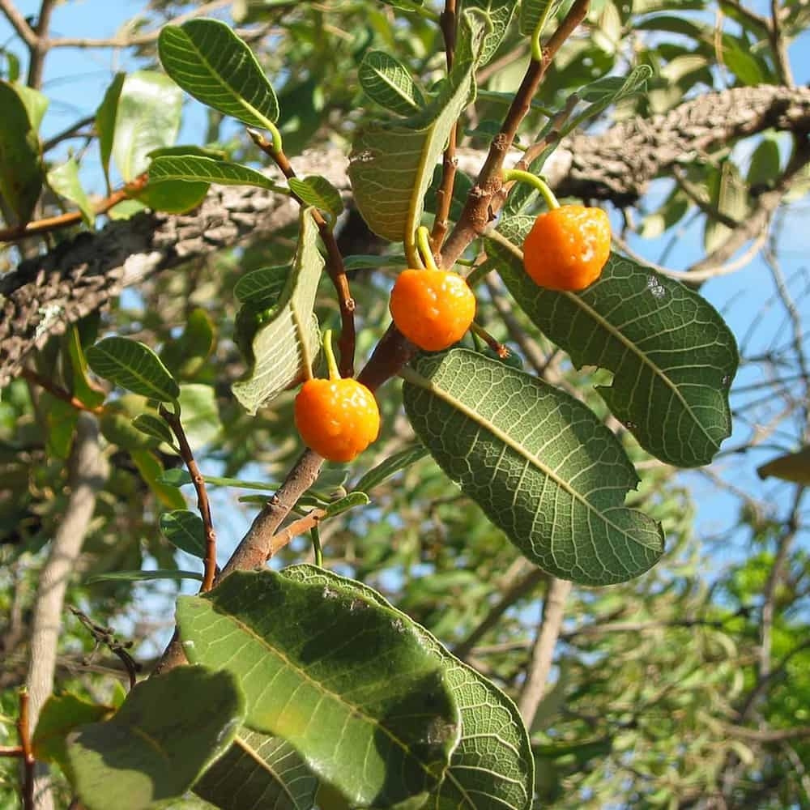
Coletar: folhas e ramos com espinhos.
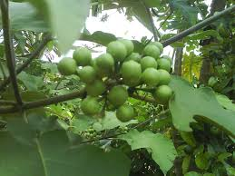
Coletar: folhas, flores e frutos.
IX · Pequeno caderno de curiosidades
O nome arbusto vem do latim arbustum, derivado de arbor (árvore) com sufixo diminutivo — ou seja, "pequena árvore".
Algumas das plantas mais antigas do mundo são arbustos: a Larrea tridentata do deserto do Mojave forma colônias com mais de 11 mil anos.
O buxinho e o teixo são tradicionais nas topiárias europeias — a arte de esculpir formas geométricas e animais em arbustos.
O chá-verde, a roseira e o café são, botanicamente, arbustos. Sim — a cafeicultura é uma cultura arbustiva.
As cercas vivas de buxo do Renascimento eram esculpidas por mestres-jardineiros que dedicavam a vida inteira a uma única alameda.
Em hebraico, o "sarsaparrilha" e a sarça-ardente do livro de Êxodo eram arbustos do deserto — pequenos, lenhosos e tenazes como tudo que cresce na areia.
❦ ✦ ❦